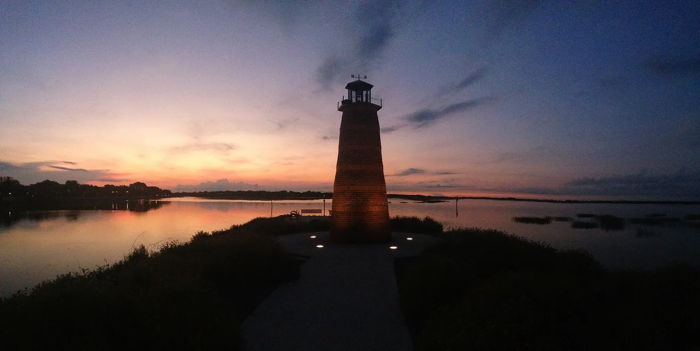

Em Kissimmee, as casas à venda incluem casas de família e townhouses na cidade e milhares de casas de férias em condomínios a poucos quilômetros dos parques da Disney. Se a ideia é alugar por diária, o endereço importa mais que a casa: no condado de Osceola, a temporada só é permitida em zonas reservadas para isso, e a HOA também precisa permitir. Os preços são mais baixos que no sul da Flórida, e hoje o comprador tem espaço para negociar. O escritório do Rui Cunha, corretor brasileiro, fica em Coral Springs, e ele atende clientes em toda a Flórida, incluindo a região de Kissimmee.
Como é Kissimmee
Kissimmee é a sede do condado de Osceola, logo ao sul de Orlando, à beira do lago Tohopekaliga. O órgão de estatística do estado (EDR) estimou a população da cidade em 84.958 habitantes em abril de 2024, alta de 2,9% em um ano (Florida EDR).
Na prática, existem duas Kissimmees. Uma é a cidade onde as pessoas moram e trabalham. A outra é a área turística ao longo da US-192 e em direção à Disney: o órgão de turismo local conta mais de 30 mil casas de férias na região de Kissimmee, a 3 a 16 km (2 a 10 milhas) dos parques da Disney, administradas por mais de 100 empresas (Experience Kissimmee). Muitas dessas casas ficam na área não incorporada do condado de Osceola, fora dos limites da cidade.
Por que tantos brasileiros olham para Kissimmee
O Brasil foi o terceiro maior mercado internacional de Orlando em 2025, com cerca de 736,3 mil visitantes (Visit Orlando), e a região de Orlando foi a segunda preferida dos compradores brasileiros na Flórida entre agosto de 2024 e julho de 2025 (Florida Realtors, perfil internacional 2025). A lógica é conhecida: usar a casa nas férias da família e alugar por temporada no resto do ano.
Já para morar, Kissimmee tem poucos brasileiros: o Census contou cerca de 500 moradores da cidade nascidos no Brasil (2020–2024) (Census ACS via Census Reporter). A comunidade brasileira da região se concentra mais no condado de Orange, em Orlando. Veja o guia de Orlando.
Casa de férias: o que as regras dizem
Esta é a parte mais importante. Confira antes de se apaixonar por uma casa.
Zoneamento. Na área não incorporada de Osceola, o imóvel precisa estar dentro da zona de aluguel por temporada (short-term rental overlay) do condado, que também tem um distrito próprio para esse tipo de moradia, o STRPD. Loteamentos e condomínios planejados podem ter restrições a mais (Osceola County). Dentro da cidade de Kissimmee, confirme com o departamento de planejamento da prefeitura se o imóvel pode ser alugado por menos de 30 dias.
Licenças. Você precisa da licença estadual de aluguel por temporada (DBPR, Division of Hotels and Restaurants) e do alvará municipal (Local Business Tax Receipt) emitido pelo Tax Collector de Osceola. Imóveis dentro da cidade também podem precisar de licença municipal. O formulário do condado aceita SSN, número de contribuinte (TIN) ou cópia do formulário W-7, o pedido de ITIN (Osceola Tax Collector).
Imposto turístico. Osceola cobra 6% de imposto turístico (Tourist Development Tax) sobre estadias de menos de seis meses. O condado avisa que não tem contrato com Airbnb, VRBO nem outras plataformas: quem recolhe e paga é o proprietário ou a administradora (Osceola Tax Collector).
Regras da HOA. Os condomínios de casas de férias costumam ter HOA, com regras e taxas próprias. Leia os documentos e confirme que a temporada é permitida antes de fazer a oferta.
Renda de aluguel nunca é garantida. Milhares de casas parecidas disputam os mesmos hóspedes, e a ocupação depende da casa, da administração e da época do ano. Antes de comprar, leia vale a pena investir em imóvel nos EUA? e o guia de aluguel por temporada na Flórida.
Mercado imobiliário em Kissimmee
Pela análise da Momentum Realty com dados do MLS da Flórida, a mediana de venda em Kissimmee estava em cerca de US$ 388 mil, 2,6% abaixo do ano anterior. Os imóveis levaram uns 62 dias para fechar contrato, com cerca de 6,6 meses de estoque (Momentum Realty, outubro de 2026), o que favorece o comprador.
Uma casa de família na cidade e uma casa de férias mobiliada num condomínio turístico são mercados diferentes. Peça ao Rui as vendas recentes do tipo de imóvel que você quer.
Cuidados práticos: enchente e impostos
Enchente. Kissimmee fica no interior, mas está numa cadeia de lagos. Em 2022, o furacão Ian provocou enchentes catastróficas e resgates em Kissimmee (Central Florida Public Media). Confira a zona de enchente e faça a cotação do seguro. Quem tem seguro pela Citizens, a seguradora estadual, vai precisar de cobertura contra enchente, exigência que entra aos poucos até 2027 (News4JAX).
Imposto predial. Casa de férias não tem isenção homestead, que é só para residência principal. O condado de Osceola explica que a emenda sobre imposto predial que vai a votação em novembro de 2026 aumentaria a isenção homestead, mas não valeria para segunda casa nem para imóvel de temporada; para esses, o limite de aumento anual do valor tributável cairia de 10% para 5% (Osceola County). Confira o resultado depois da votação.
Impostos no Brasil e nos EUA. Quem mora no Brasil precisa declarar o imóvel e a renda do aluguel. Leia como declarar imóvel nos EUA no Imposto de Renda e converse com um contador nos dois países.
Escolas
Kissimmee é atendida pelo distrito escolar do condado de Osceola (School District of Osceola County). Confirme a escola de cada endereço no site do distrito e consulte as notas no site do Departamento de Educação da Flórida.
Comprar com o Rui em Kissimmee
O Rui trabalha com imóveis na Flórida desde 2003, primeiro como mortgage broker e depois como broker e General Contractor licenciado, o que ajuda na hora de avaliar o estado de uma casa de férias, as regras da HOA e a conta do aluguel. Ele ajuda você a comprar casa na Flórida ou, se você mora no Brasil, a investir na Flórida. Faça as contas, com impostos, seguro e HOA, na calculadora de financiamento.
Perguntas frequentes
Posso colocar minha casa de Kissimmee no Airbnb?
Só se o imóvel estiver numa zona que permite temporada e a HOA autorizar. Na área não incorporada de Osceola, isso significa estar dentro da zona de aluguel por temporada do condado. Você também precisa da licença estadual, do alvará do condado e de pagar você mesmo os 6% de imposto turístico.
O Airbnb recolhe o imposto turístico de Osceola?
Não. Segundo o Tax Collector de Osceola, o condado não tem contrato com Airbnb, VRBO nem outras plataformas, então o proprietário ou a administradora precisa recolher e pagar os 6%.
Quanto custa uma casa em Kissimmee?
Pela análise da Momentum Realty, a mediana estava em cerca de US$ 388 mil em outubro de 2026, 2,6% abaixo de um ano antes. Casas de férias mobiliadas em condomínios turísticos podem ter preços diferentes das casas de família.
Comprar casa de férias em Kissimmee dá green card?
Não. Comprar imóvel não dá direito a visto nem a green card. Veja comprar imóvel nos EUA dá green card?.
Dá para financiar uma casa em Kissimmee morando no Brasil?
Existem financiamentos para estrangeiros, em geral com entrada maior, sempre sujeitos à aprovação do banco. Veja investir na Flórida ou fale com o Rui.
Fale com o Rui
Pensando em casa de férias em Kissimmee? Peça ao Rui para conferir zoneamento, regras da HOA e vendas recentes antes da oferta.